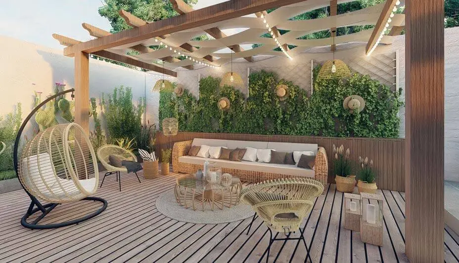
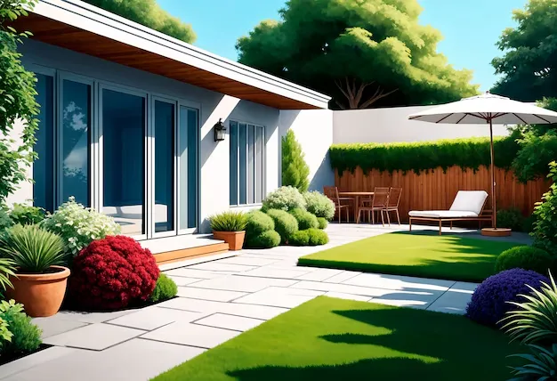
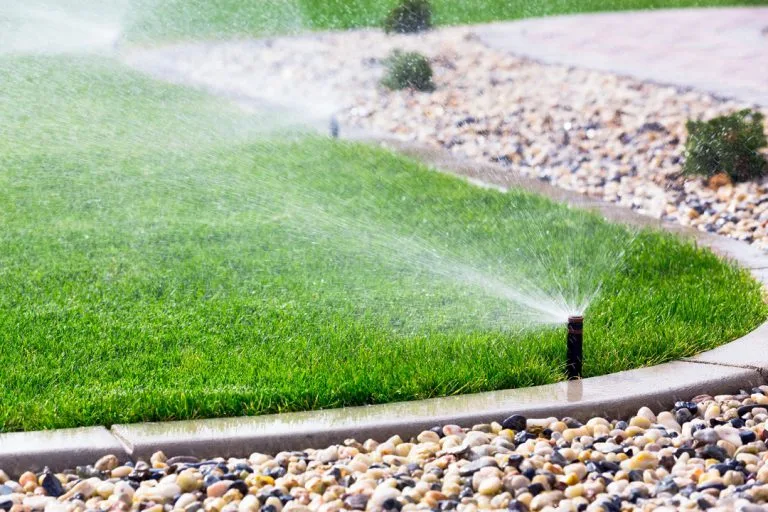
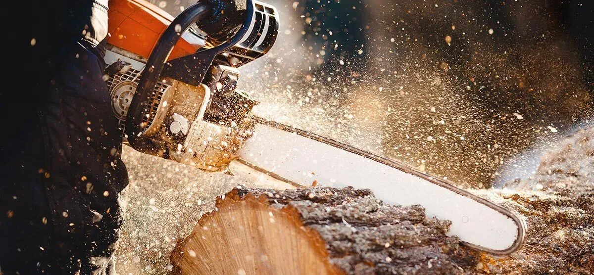
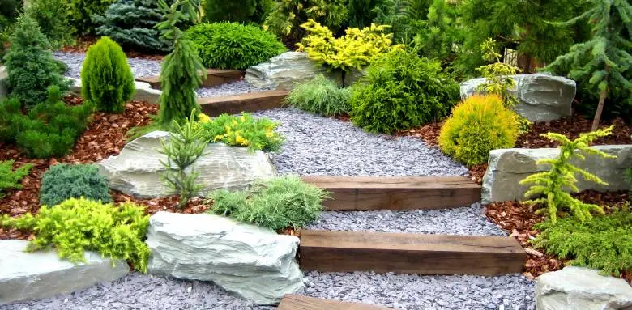

Transformez votre espace extérieur en un véritable havre de paix grâce à nos conceptions personnalisées, qui marient harmonieusement esthétisme et nature. Que ce soit pour un jardin verdoyant, une terrasse élégante ou un espace de détente unique, nous créons des aménagements sur mesure qui s'adaptent parfaitement à votre style de vie et à vos envies.

Jardinier Paysagiste Andilly - Paysager - Elagueur Andilly
DEVIS GRATUITNOS SERVICES
Conception de Jardins

Transformez votre espace extérieur en un havre de paix avec nos conceptions sur mesure, alliant esthétisme et nature.
Plantation et Entretien espace vert

Assurez un jardin éclatant avec nos services de plantation et d’entretien, pour des plantes en pleine santé toute l'année.
Système Irrigation

Optimisez l'arrosage de votre jardin avec nos systèmes d'irrigation sur mesure. Profitez d'une solution efficace et durable pour un espace toujours verdoyant.
Entretien Annuel

Préparez votre jardin pour l’hiver avec notre service d’entretien hivernal. Protégez vos plantes et assurez leur santé pour un printemps resplendissant.
Aménagement de Terrasses

Créez un espace extérieur unique avec nos services d'aménagement de terrasses. Alliez confort et style pour profiter pleinement de vos moments en plein air.
Rénovation de Jardins
Donnez une nouvelle vie à votre jardin avec notre service de rénovation. Nous redéfinissons votre espace pour en faire un lieu accueillant et plein de charme.
Elagage et Abattage
Assurez la santé de vos arbres avec nos services d'élagage et d'abattage professionnels. Nous garantissons un travail soigné pour un jardin sûr et esthétique.
Pose de Clôture

Définissez vos espaces extérieurs avec élégance grâce à notre service de pose de clôture. Alliez sécurité et esthétique pour un jardin protégé et harmonieux.
Aménagement d'Allées
Valorisez votre jardin avec nos aménagements d’allées sur mesure. Créez des chemins esthétiques et pratiques qui guident vos pas tout en sublimant votre espace extérieur.

Assurez la beauté et la vitalité de votre jardin tout au long de l'année grâce à nos services de plantation et d'entretien complets. Nous prenons soin de chaque plante, du choix des espèces adaptées à votre environnement jusqu'à l'entretien régulier, pour garantir un jardin éclatant et des plantes en pleine santé, quelle que soit la saison.

Optimisez l'arrosage de votre jardin grâce à nos systèmes d'irrigation sur mesure, conçus pour répondre aux besoins spécifiques de votre espace extérieur. Profitez d'une solution moderne, efficace et durable qui assure une répartition homogène de l'eau, réduisant les gaspillages et maintenant vos plantes en parfaite santé. Avec nos installations, votre jardin reste verdoyant et éclatant tout au long de l'année, même pendant les périodes de sécheresse.
Préparez votre jardin pour l’hiver avec notre service d’entretien hivernal complet. Nous protégeons vos plantes des rigueurs de la saison froide, en appliquant les soins nécessaires pour préserver leur santé et leur vigueur. Nos experts en jardinage prennent soin d’isoler les racines, de tailler les végétaux, et de protéger les sols afin d’assurer une floraison éclatante dès l’arrivée du printemps. Confiez-nous votre jardin pour un espace extérieur en pleine forme, prêt à renaître avec éclat au retour des beaux jours.
Créez un espace extérieur à votre image avec nos services d'aménagement de terrasses sur mesure. Que vous souhaitiez une terrasse chaleureuse pour vos repas en famille ou un espace élégant pour vos réceptions, nous allions confort et style pour répondre à vos envies. Nos experts en aménagement extérieur sélectionnent des matériaux durables et esthétiques pour un rendu harmonieux et résistant aux intempéries. Profitez d'une terrasse unique, conçue pour s’intégrer parfaitement dans votre environnement, et savourez pleinement vos moments de détente en plein air, été comme hiver.
Offrez une seconde jeunesse à votre jardin grâce à notre service de rénovation. Nos experts repensent et redéfinissent chaque recoin de votre espace extérieur pour en faire un lieu accueillant, harmonieux et plein de charme. De la réorganisation des massifs de fleurs à la création de nouveaux espaces de détente, nous transformons votre jardin en un havre de paix adapté à vos goûts et besoins. Que ce soit pour une touche moderne, un style naturel ou une ambiance zen, nous vous accompagnons pour créer un jardin qui reflète votre personnalité et invite à la relaxation.

Préservez la santé et la beauté de vos arbres grâce à nos services d'élagage et d'abattage professionnels. Nos experts qualifiés interviennent avec soin pour assurer un entretien adapté, éliminant les branches mortes, rééquilibrant les formes et sécurisant votre espace. En plus d'améliorer l'esthétique de votre jardin, nous veillons à maintenir la sécurité autour de vos arbres, protégeant ainsi vos biens et vos proches. Faites confiance à notre expertise pour un jardin sûr, harmonieux et parfaitement entretenu tout au long de l'année.
Délimitez vos espaces extérieurs avec style grâce à notre service de pose de clôture sur mesure. Nous vous proposons des solutions qui allient sécurité et esthétique, pour créer un jardin protégé tout en conservant une harmonie visuelle avec votre environnement. Que vous préfériez une clôture en bois naturel, en métal moderne ou en matériaux composites durables, nos experts installent chaque élément avec précision pour garantir solidité et élégance. Transformez votre jardin en un espace intime et accueillant, parfaitement adapté à votre style de vie.

Sublimez votre jardin en créant des allées élégantes et fonctionnelles grâce à nos aménagements sur mesure. Nos experts conçoivent des chemins qui allient praticité et esthétisme, en utilisant des matériaux variés comme la pierre, le gravier ou le pavé, parfaitement adaptés à votre style et à votre environnement. Ces allées définissent et structurent votre espace extérieur, guidant vos pas avec charme et facilitant l’accès à chaque recoin de votre jardin. Offrez-vous un aménagement qui rehausse la beauté de votre extérieur tout en améliorant votre confort de déplacement au quotidien.
NOTRE SAVOIR-FAIRE À ANDILLY
Chez Rénov Extérieur à Andilly, nous mettons notre expertise et notre passion du paysagisme au service de vos espaces extérieurs. Nos spécialistes créent et entretiennent vos jardins, terrasses et aménagements verts avec précision et souci du détail. Grâce à des équipements modernes et une approche soignée, nous assurons des prestations de qualité, adaptées à vos envies et aux spécificités du climat local. Faites confiance à notre équipe pour embellir et valoriser votre extérieur à Andilly.
NOS TARIFS À ANDILLY
UNE OFFRE AVANTAGEUSE
Chez Rénov Extérieur Andilly, nous proposons des prestations d’aménagement et d’entretien paysager à des prix compétitifs. Notre priorité est d’offrir des solutions sur-mesure qui allient qualité et budget maîtrisé, afin de répondre parfaitement à vos attentes tout en respectant vos contraintes financières.
DEVIS GRATUITPOURQUOI CHOISIR RÉNOV EXTÉRIEUR À ANDILLY ?
Opter pour Rénov Extérieur à Andilly, c’est choisir un expert paysagiste local, parfaitement adapté aux besoins spécifiques de la région. Notre équipe met en œuvre des techniques modernes et utilise des matériaux de qualité pour garantir des réalisations durables et esthétiques. Que ce soit pour la création d’espaces verts, l’aménagement de terrasses ou la rénovation de jardins, nous assurons un accompagnement personnalisé et une exécution soignée. Faites confiance à notre savoir-faire pour transformer votre extérieur à Andilly en un véritable espace de bien-être.